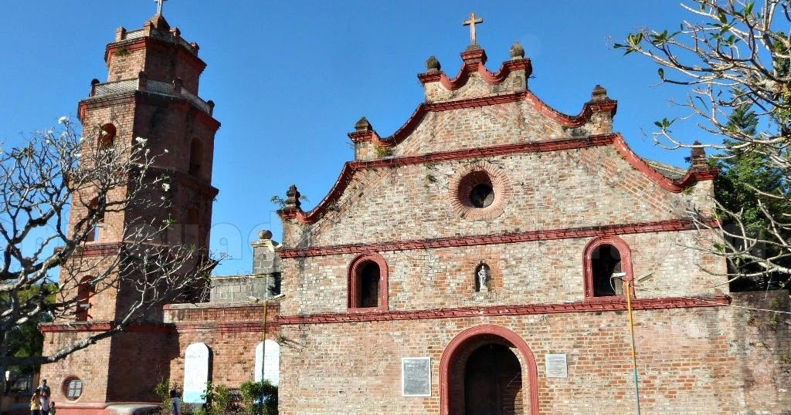
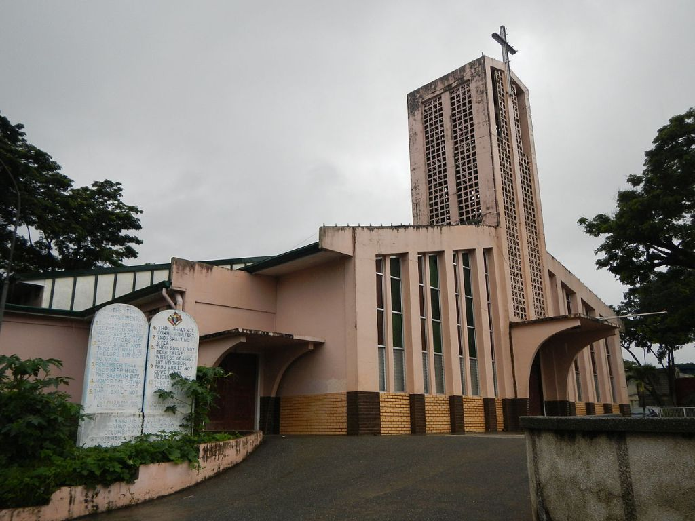

Churches, Cathedrals & Heritage Sites
These sacred and historic landmarks tell the story of Nueva Vizcaya's colonial past and enduring faith.

St. Dominic Cathedral
The main cathedral of the Diocese of Bayombong, this stunning Spanish colonial church is a beloved heritage landmark and center of spiritual life in the province.

Dupax del Norte Parish Church
One of the oldest churches in Nueva Vizcaya, this centuries-old stone church features thick colonial-era walls and a historic bell tower that has stood for over 300 years.

St. Joseph Parish Church
A beautiful and active parish church in the trading hub of Solano, reflecting the town's importance as a commercial and religious center in the eastern part of the province.

Nueva Vizcaya Museum
Explore artifacts, photographs, and exhibits showcasing the history, culture, and heritage of Nueva Vizcaya's diverse communities and their traditions through the ages.